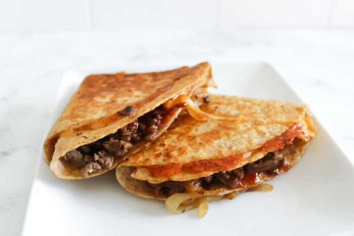

This recipe details the ingredients required and outlines steps for making quesadillas. The filling will be added to a tortilla wrap along with cheese to make a quesadilla. The estimated times for this recipe are 10 minutes for preparation and 15 minutes for cooking (25 minutes total).
Home